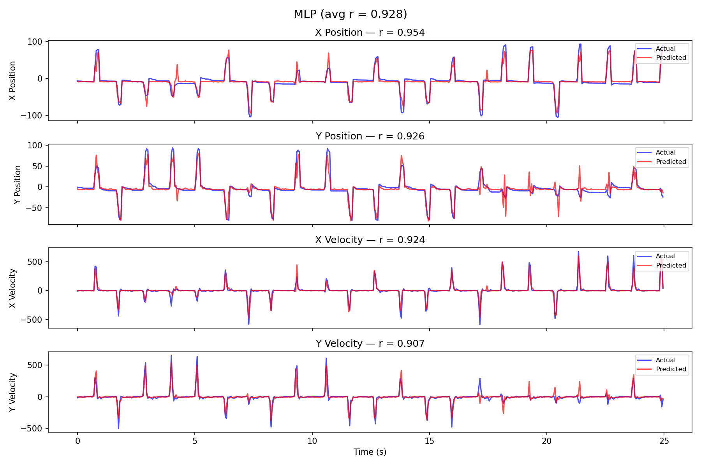
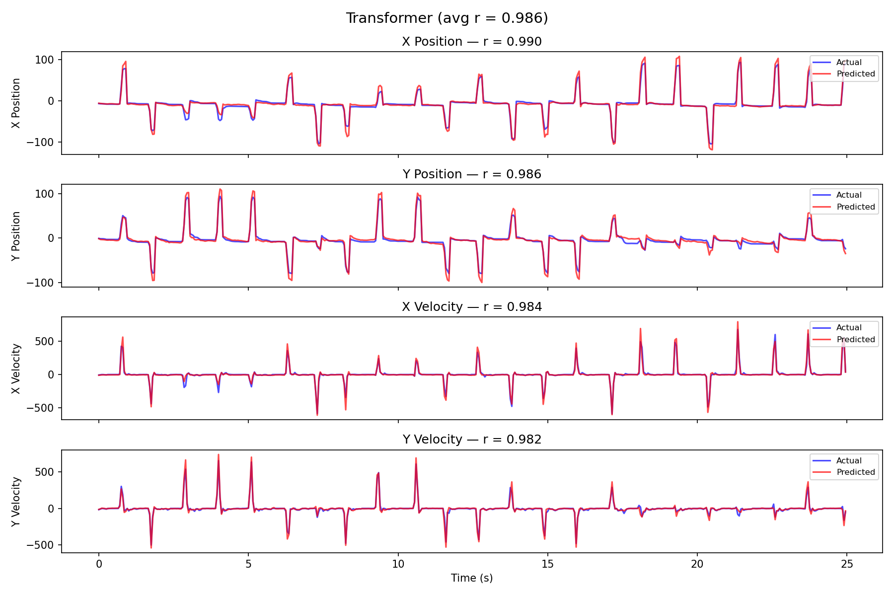

Decoding Motor Intent from Neural Signals
Comparing MLP, 2D CNN, LSTM, and Transformer architectures for brain-computer interface decoding
This project decodes hand position and velocity from 95-channel motor-cortex spike-count data recorded during a reaching task.
The goal: predict where the hand is moving using only neural activity. Four deep learning architectures were trained
and compared on the same dataset (contdata95.mat), sampled at 50ms bins. The live replay below shows
real decoded trajectories on held-out test data — exported directly from the trained models.
The models & how they were trained
We compared four architectures that differ in how they use time. The MLP is a fully-connected network (five hidden layers) that decodes from a single 50 ms bin of 95 spike counts — no temporal context. The 2D CNN treats a 32-bin window as a (time × channel) image and stacks four convolutional blocks with global pooling. The LSTM runs recurrently over the same 32-bin (1.6 s) window and predicts from its final hidden state. The Transformer projects each bin, adds sinusoidal positional encoding so self-attention can use temporal order, applies a two-layer encoder, and mean-pools across the window. All four were trained the same way: a temporal 70/15/15 split (never shuffled, to avoid leakage), spike counts z-scored with training statistics only, and Adam with MSE loss and early stopping. To report trustworthy numbers, we trained every model across 5 random seeds on a GPU and report the mean ± standard deviation.
Live Decoding Replay
Watch each model decode hand position from neural activity in real-time, on one representative run from the held-out test set. Blue = actual trajectory, red = model prediction. (The headline metrics below are 5-seed means.)
Architecture Comparison
Average Pearson correlation on the held-out test set — mean ± std over 5 random seeds. Error bars show the std.
Model Architectures
Fully Connected NN
2D CNN
LSTM
Transformer
Key Insight
Temporal context is what matters most. Given a 1.6 s window, both sequence models decode kinematics almost perfectly — the LSTM leads at 0.986 and the Transformer reaches 0.982. The Transformer depends on its sinusoidal positional encoding to do so: without it, self-attention sees the 32-step window as an unordered set and only reaches 0.74. The single-bin MLP is a strong, cheap baseline (0.88) from one 50 ms bin, while the 2D CNN (0.84 ± 0.05) is the most seed-sensitive — strong on velocity, weaker on absolute position. Reported numbers are mean ± std over 5 seeds (Lambda GPU sweep).
Decoded Trajectories
Held-out test-set decoding (representative seed). Blue = actual, Red = predicted.
MLP Decode

From a single 50 ms bin (no temporal context), the MLP reaches 0.88 average correlation — a strong, cheap baseline.
2D CNN Decode

The 2D CNN excels at velocity (~0.96) but is weaker on absolute position (~0.60); most seed-sensitive at 0.84 ± 0.05.
LSTM Decode

The LSTM nearly perfectly tracks the actual trajectory — best overall at 0.986 ± 0.000 (most stable across seeds).
Transformer Decode

After adding positional encoding, the Transformer reaches 0.982 ± 0.001 — up from 0.74 when temporal order was ignored.